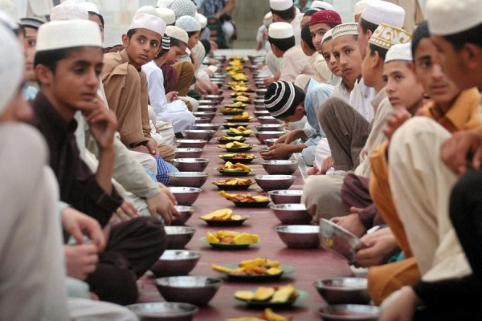
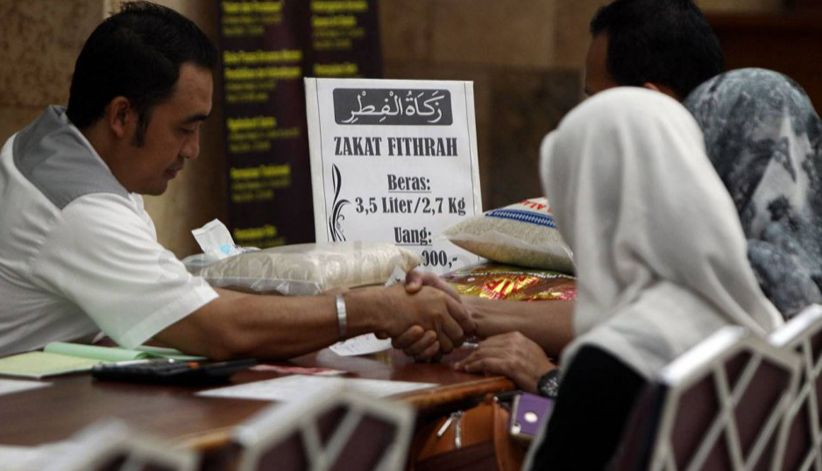
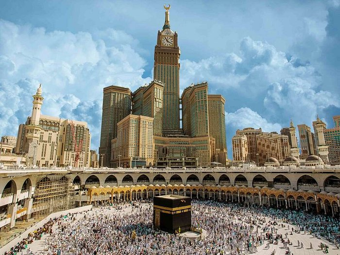

Pengertian Rukun Islam
Rukun islam merupakan lima perkara dasar islam yang menjadi syarat utama untuk menjadi sosok muslim yang sempurna. Kelima perkara ini terdiri dari syahadat, salat, zakat, puasa, dan naik haji bagi yang mampu.
Muslimin dan Muslimah, lima rukun ini ibarat pondasi hidup untuk mendapatkan ridho dari Allah SWT yang dijelaskan secara rinci pada HR. Al Bukhari dan Muslim sebagai berikut. “Islam dibangun di atas lima perkara: persaksian bahwa tiada tuhan yang berhak disembah kecuali Allah dan Muhammad adalah utusan Allah, mendirikan salat, menunaikan zakat, pergi haji, dan puasa di bulan Ramadhan”.
Source: http://hanimo.com/img/p/1/7/8/178-thickbox_default.jpg
Rukun Pertama
Syahadat atau persaksian merupakan hal pertama yang dilakukan sebelum masuk islam. Kalimat ini perlu diucapkan dengan penuh keyakinan dan kehati-hatian. Berikut ini lafadznya:
أَشْهَدُ أَنْ لَا إِلَهَ إِلَّا اللهُ وَأَشْهَدُ أَنَّ مُحَمَّدًا رَسُوْلُ اللهِ
Asyhadu an laa ilaaha illallahu, wa asyhadu anna muhammadar rasuulullah. Artinya: "Aku bersaksi bahwa tidak ada Tuhan melainkan Allah. Dan aku bersaksi bahwa Nabi Muhammad adalah utusan Allah".
Source: https://pkh.or.id/wp-content/uploads/2023/01/hzh.jpg
Rukun Kedua
Rukun islam yang kedua adalah melaksanakan salat. Menurut KBBI (Kamus Besar Bahasa Indonesia), salat adalah ibadah yang harus dilakukan oleh muslim dengan syarat, rukun, dan bacaan tertentu dimulai dari takbir dan diakhiri dengan salam. Dalam satu harinya, seorang muslim wajib menjalankan salat 5 waktu dengan jumlah rakaat sebagai berikut:
• Salat subuh berjumlah 2 rakaat.
• Salat zuhur berjumlah 4 rakaat.
• Salat ashar berjumlah 4 rakaat.
• Salat magrib berjumlah 3 rakaat.
• Salat isya berjumlah 4 rakaat.
Source: https://ntb.kemenag.go.id/upload/images/berita/sholat-dhuha.jpg
Rukun Ketiga
Ibadah puasa merupakan ibadah wajib yang harus dilaksanakan oleh umat muslim setiap tahunnya. Puasa yang wajib dilaksanakan adalah selama satu bulan penuh di bulan Ramadan. Saat berpuasa, kamu harus menahan rasa lapar, haus, dan hawa nafsu agar bisa mengontrol kegiatan buruk. Selain itu, kamu juga harus bisa menahan amarah dan juga tetap bersyukur.
Rukun Keempat
Setiap bulan Ramadhan, para muslim wajib untuk membayar zakat sesuai dengan takaran yang sudah ditetapkan agar tidak memberatkan umat-Nya. Hasil zakat fitrah akan dibagikan kepada 8 asnaf atau penerima untuk membantu kesulitan sesama muslim agar mendapatkan makanan dan pakaian yang layak.
Source: https://img.inews.co.id/media/822/files/inews_new/2018/Ilustrasi/zakat_2si.jpg
Rukun Kelima
Untuk yang kelima, umat islam bisa menunaikan ibadah haji bagi yang mampu. Alasan mengapa naik haji bisa dilakukan bagi yang mampu karena untuk perjalanan ke Tanah Suci memerlukan dana yang cukup besar, Toppers. Ibadah haji dilaksanakan setiap tahunnya pada bulan Zulhijah untuk berkumpul bersama-sama di Baitullah. Jamaah haji dari Indonesia umumnya menetap di tanah suci selama kurang lebih 40 hari untuk rukun Islam yang satu ini.
Source: https://dynamic-media-cdn.tripadvisor.com/media/photo-o/22/a5/00/e7/exterior.jpg?w=700&h=-1&s=1